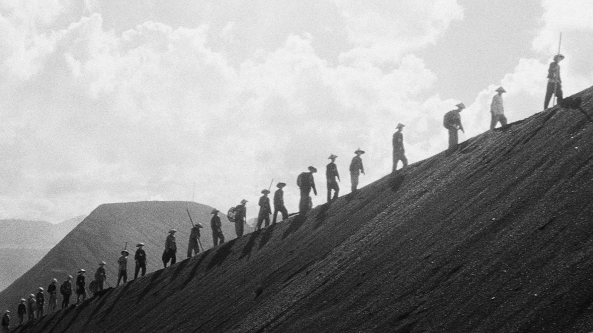

天空
公元1389年六月十五日，奥斯曼帝国的铁骑冲入了科索沃。塞尔维亚人拿起刀剑，或自愿或被迫地加入了拉扎尔亲王的队伍来对抗素不相识的野蛮伊斯兰异教徒。菲利普的妻子在给他擦好盔甲后，噙着眼泪，目送他加入队伍——她心里多少明白，这将是她最后一次与她丈夫相见的机会。五天后，按照他对妻子的吩咐，他的兄弟，尼古拉，将来代替他为他的主子务农。
三小时后——虽然当时还没有这种计时方式——菲利普冲在队伍的最前方，被冰冷的奥斯曼骑兵长矛刺穿胸膛，随着杀死他的凶器一起倒在地上，并在几秒后因失血过多死去。在意识尚存的时候，菲利普拼命地用他模糊的双眼看向天空，试图寻找一个答案，一个拉扎尔亲王，他的妻子，尼古拉，乃至上帝都无法提供给他的答案。在死前的一瞬，他终于松开紧皱的几十年的眉头，他那自出生便沾满汗水和灰尘的脸上第一次——也是最后一次——露出了微笑，而他就那样着迷地凝视着天空失去了意识。
在他的身下约10英寸的地方，一朵雏菊正在生根发芽。
九日后，在遥远的东方，一个叫朱元璋的男人忽然感到头部疼痛难忍。自三十年前，男人就已经作为这东方古国的皇帝享尽荣华富贵。然而，尽管在朝堂之上大胜了无数的贪官污吏，在沙场上杀死了无数的残兵败将，朱元璋还是敌不过自己头脑中的一个肉瘤。这个造成他数年偏头痛，以至于他在盛怒中砍掉了一个又一个无能太医的脑袋的肉瘤，在此时终于破裂，而再也不会对他造成任何骚扰了。不幸的是，他大脑中的数条血管也随之一起爆破，血液在几秒之内将他的大脑淹没，而他连呼唤门外太医的机会都没有，便从金子打造的椅子上滑倒在地上，失去了意识。朱元璋到底比菲利普幸运很多，在他死后一小时内便有人发现了他的尸体，而全国百姓都会为他戴丧——然而说到底，无论如何壮观的丧事，他无论如何也不可能知道了。在生命的最后一瞬，他——同菲利普一样——费力地抬起头想望向天空，却奈何明故宫的屋顶挡住了他的视线。于是，极其遗憾却又有些安心地，他终究无可奈何地睡去了。
三万年前，在非洲大陆的大湖地区，热带草原旁的一个山洞中，一家俾格米人正在对着一个羊腿祈祷。俾格米人，按照这家的父亲所说，是森林的儿子，因而他们祈祷的对象自然也是森林。这些人并没有名字。他们生命中可以接触到的人是如此有限，他们语言的词汇是如此匮乏，他们的寿命又是如此短暂，以至于他们只需要用社会关系组成的昵称来互相称呼便足矣。例如，对于他的两个孩子而言，这个父亲便是“父”，而对于三公里外偶尔能碰到的另一家俾格米人——这便是这家人此生唯一非亲非故的同伴——而言，他便是“大男人”，毕竟在他们的世界中，唯一一个不是家庭成员的“大男人”也就只剩下这个父亲了。
对于这家人而言，今天的祈祷与往常不甚相同。在“父”祈祷的时候，“儿”与“女”不仅听到了往常对森林所赐之食物的感谢词，而似乎在末尾又听到了“父”加上的一些其他什么无法辨别的新词——“儿”猜想，这些新词定是因为“母”的缘故而加的。今天在与一头大象的搏斗中，“母”，这个陪伴了他们一生的女人，在被那象的尖利牙齿一戳后便像兽皮般破了个大洞，红色的水从其中不断地流出。“母”在抽搐了几下后便睡着了，而不管“儿”如何摇晃，她都没有像往常一样醒来。她一定是累了，“儿”如此想象，毕竟自己在奔跑几天而不眠之后也曾这样昏睡不起。或许“父”是在感谢森林对“母”的恩惠。想到这里，“儿”忽然有些疑惑。然而，他一向是不敢向“父“发问的。于是，他也双手合十，闭着眼睛，有学有样地祈祷起来。利用着他那浅显而简陋的语言，以及简单到近乎滑稽的祷词，他平静地向森林问出了那个菲利普，朱元璋，以及“母”在死前都思考过的问题：
“森林啊森林，请告诉我，这一切究竟是为了什么？”
回答他的是长久的寂静，鸟叫声，以及“父”祈祷的低语——森林并没有给他答案。但他在睁开眼睛后感觉似乎平静了许多，于是——如他数万年后在巴尔干的胞兄菲利普一般——他露出了微笑。这个微笑持久而恒永，伴随着他的一生。因此，在他长大后，另一家俾格米人的孩子们便叫他“笑着的人“。
在他身后的石缝中，一朵雏菊正在盛开。
自那以后过了数万年。“笑着的人”那亿亿万万的胞兄——现在被称为人类的物种——逐渐走出了非洲大陆，沿着水源一路自中东行至白令海峡，在到处都留下了他们的踪迹。这些胞兄们前所未有地快速生长，成为了菲利普，朱元璋，以及亿万其他人民。他们痛苦，他们快乐，他们享受，他们折磨——一切为了寻找那个被问询了无数次的答案。然而他们头顶的天空无法言语，于是这答案也就从未被传说；然而雏菊却到处盛开。就算是百年后，在穆斯林被屠杀的科索沃，在图西人破费以求死在胡图恐怖分子的枪下而不是砍刀下的卢旺达，在堆满了头骨的山洞，在军队用机关枪扫射群众的南京，雏菊也在盛开着。而在那雏菊上倒下的人，在沉入永久长眠前望向天空时，都无一例外地发自内心地微笑。因为，无论这一生过的贫穷还是富有，幸福还是痛苦，他们的内心都清楚：那答案是如此的浅显易懂而简单美丽。
-2024.3.31, Rothesay NB, Tony Su
Art Credit: Masaki Kobayashi
Click Me For Document Download as .docx File